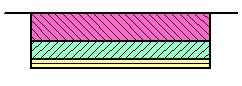
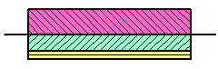
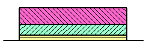
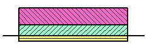

参考平面是层合板坐标系中平面 z=0的位置。
顶部
中间
底部
指定
|
 |
 |
|
顶部 |
中间 |
|
zbottom = - T = - 0.6 |
zbottom = - T/2 = - 0.3 |
|
ztop = 0 |
ztop = T/2 = 0.3 |
|
 |
 |
|
底部 |
指定 底部纤维距离 = - 0.1 |
|
zbottom = 0 |
zbottom = - 0.1 |
|
ztop = T = 0.6 |
ztop = 0.5 |